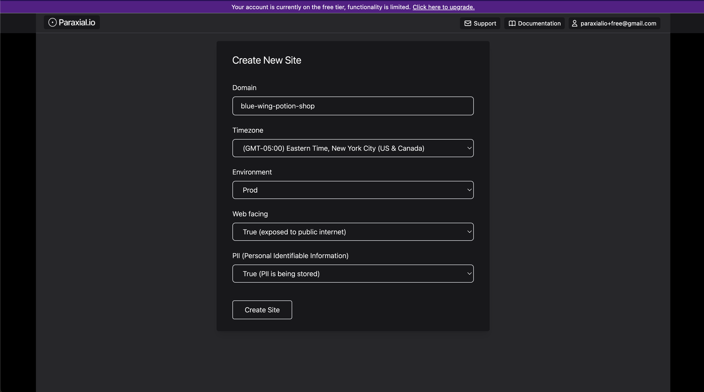
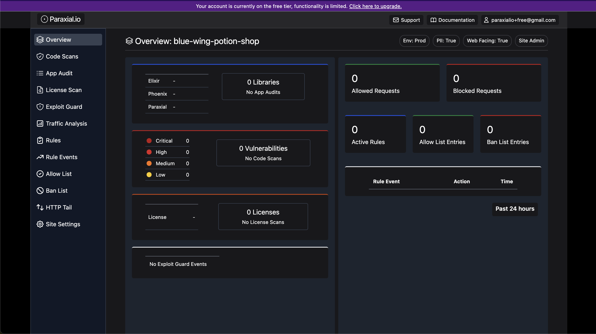
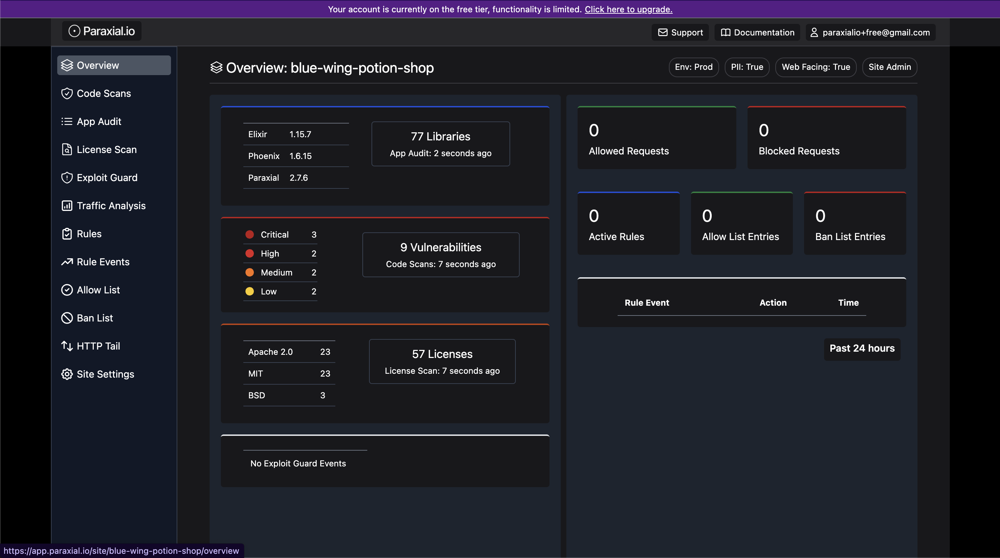
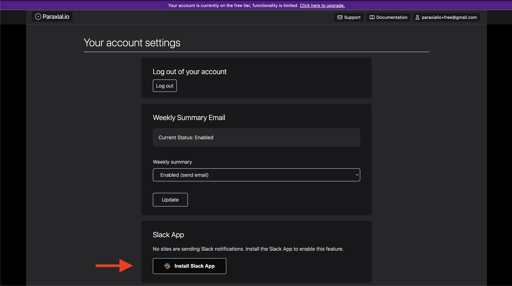
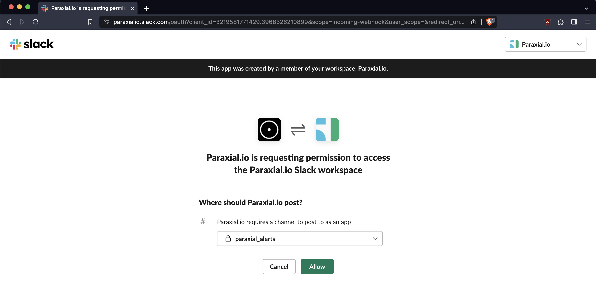
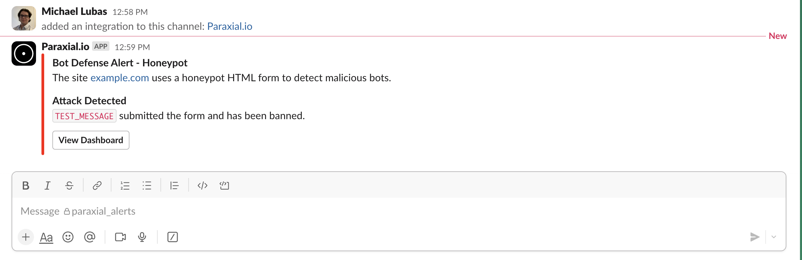
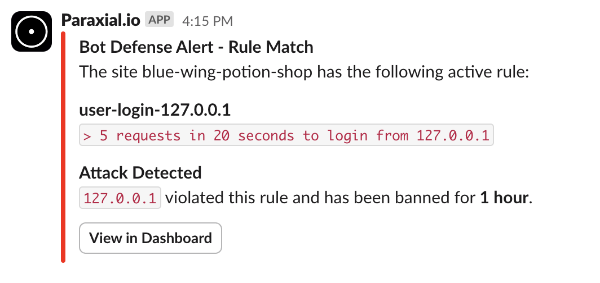

Getting started with Paraxial.io (Elixir, Free Tier)
This tutorial is a step-by-step guide to setup Paraxial.io with the open source vulnerable Elixir application Potion Shop. It will walk through creating an account, installing the agent, and getting results flowing to the backend. Functionality is limited in the free tier, for example you cannot send HTTP traffic to the Paraxial.io backend for analysis.
Free Tier Limits
- Maximum of 2 Sites.
- You cannot invite users to a Site.
- HTTP traffic cannot be ingested by the backend.
- Limit of 30 scans per site, per month.
If you have questions about Paraxial, need enterprise support, or would like to upgrade your plan, email support@paraxial.io.
1. Create your Paraxial.io account
Go to https://app.paraxial.io/ in your web browser. Create a new account. You will receive a confirmation email, use it to confirm your account and sign in. You have no sites at this point.
2. Create your site
Create a new site, but pick a different domain besides local_potion_shop. Note that the domain is really treated as a comment by Paraxial.io, you can put any value you want here, it does not have to be a valid URL and no HTTP requests are ever sent to it.


3. Install the agent
This guide assumes you are installing Paraxial.io in the open source vulnerable Elixir app Potion Shop.
% git clone https://github.com/securityelixir/potion_shop.git
Cloning into 'potion_shop'...
...
% cd potion_shop
Open mix.exs. If you see the line:
{:sobelow, "~> 0.13", only: [:dev, :test], runtime: false}
Delete it. The Paraxial agent will install Sobelow as a dependency, deleting this line avoids a conflict.
Add the following to your mix.exs file:
{:paraxial, "~> 2.7.7"}
Then run:
mix deps.get
mix ecto.setup
mix phx.server
Check to make sure the running application matches the screenshot in the Potion Shop README before you continue. - https://github.com/securityelixir/potion_shop
4. Configure the dev environment
Open config/dev.exs and add:
config :paraxial,
paraxial_api_key: System.get_env("PARAXIAL_API_KEY")
Set the PARAXIAL_API_KEY environment variable to keep this secret out of source code.
The API key's value is found under "Site Settings", it looks like a UUID. To keep it out of source code for this tutorial, you can do:
export PARAXIAL_API_KEY=your_value_here
5. Install the Paraxial agent
Run:
mix deps.get - Install the agent
mix paraxial.scan - Runs Code Scans and License Scan
mix phx.server - Runs app audit. If you are not in a Phoenix application, you can also do iex -S mix
When running these commands watch out for errors and warnings. Common issues:
- Did you put the configuration in the
config/dev.exsfile? - Is
PARAXIAL_API_KEYset correctly? Sometimes there is a trailing newline and that breaks things. - Is
paraxial_urlset to"https://app.paraxial.io", with quotes? - What mix environment is your application running in? Is it dev?
- If the API key is being read, but the scan upload fails, is it the correct value?
Customer support is available to help, email support@paraxial.io.
If everything worked you should see the following screen:

On the free tier, you are limited to 30 code scans per month.
6. Setup Slack App
The Slack App is included with the free tier, and alerts on the following:
-
IP Bans to a rule match. For example, "An IP sends > 5 requests in 10 seconds to
/users/login". -
IP Ban due to a honeypot form being submitted.
-
Exploit Guard triggered (monitor or block mode).
You will see examples of these soon. To setup the Slack app go to your account settings:

Add to Slack:

Send a test message:

7. Bot Defense, Rate Limiting
The free Paraxial.io plan does not support sending HTTP requests to the backend for Bot Defense, so the setup is slightly different compared to a paid account.
Open the endpoint.ex file in your project and add the following:
plug RemoteIp, headers: ["fly-client-ip"] # Required if behind a proxy, "fly-client-ip" is Fly.io specific, your setting may be different https://github.com/ajvondrak/remote_ip
plug Paraxial.AllowedPlug # Determines if an HTTP request should be allowed or blocked before it reaches the router
plug HavanaWeb.Router
Note that when an IP address is banned, the incoming request will be dropped before it reaches the router to reduce server load.
Now we want to ban any IP that does more than 5 login attempts in 20 seconds. Lets use Potion Shop as the example.
lib/carafe_web/controllers/user_session_controller.ex
defmodule CarafeWeb.UserSessionController do
...
def create(conn, %{"user" => user_params}) do
%{"email" => email, "password" => password} = user_params
if user = Accounts.get_user_by_email_and_password(email, password) do
UserAuth.log_in_user(conn, user, user_params)
else
# In order to prevent user enumeration attacks, don't disclose whether the email is registered.
render(conn, "new.html", error_message: "Invalid email or password")
end
end
...
end
After install:
def create(conn, %{"user" => user_params}) do
ip_string = conn.remote_ip |> :inet.ntoa() |> to_string()
ip = conn.remote_ip
key = "user-login-#{ip_string}"
seconds = 20
count = 5
ban_length = "hour"
msg = "`> 5 requests in 20 seconds to login from #{ip_string}`"
case Paraxial.check_rate(key, seconds, count, ban_length, ip, msg) do
{:allow, _count} ->
do_create(conn, user_params)
{:deny, _count} ->
conn
|> put_resp_content_type("text/html")
|> send_resp(429, "Rate limited")
end
end
def do_create(conn, user_params) do
%{"email" => email, "password" => password} = user_params
if user = Accounts.get_user_by_email_and_password(email, password) do
UserAuth.log_in_user(conn, user, user_params)
else
# In order to prevent user enumeration attacks, don't disclose whether the email is registered.
render(conn, "new.html", error_message: "Invalid email or password")
end
end
Slack notification:

Further Reading
The following features are also included in the free tier:
GitHub App - security reviews on each new pull request
Exploit Guard - block hacking attempts at runtime
Honeypot URLs - ban malicious IPs
Cloud IPs - a plug to stop bot traffic, useful on authentication routes